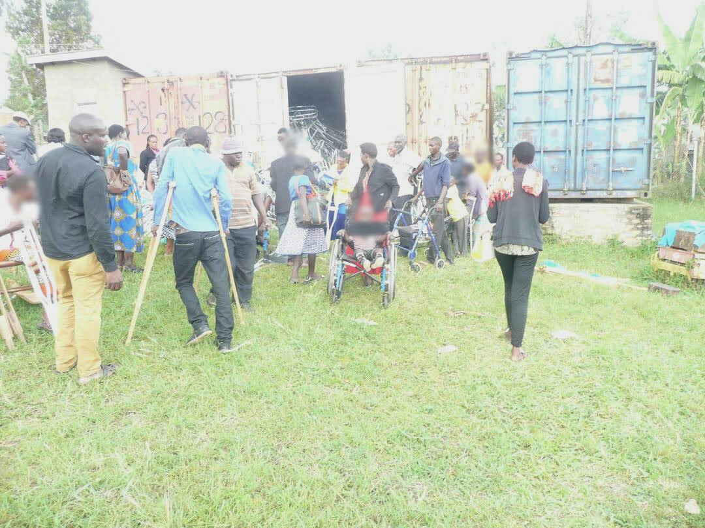
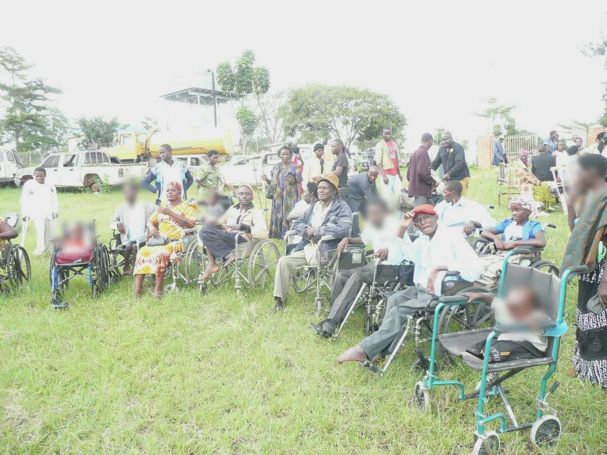
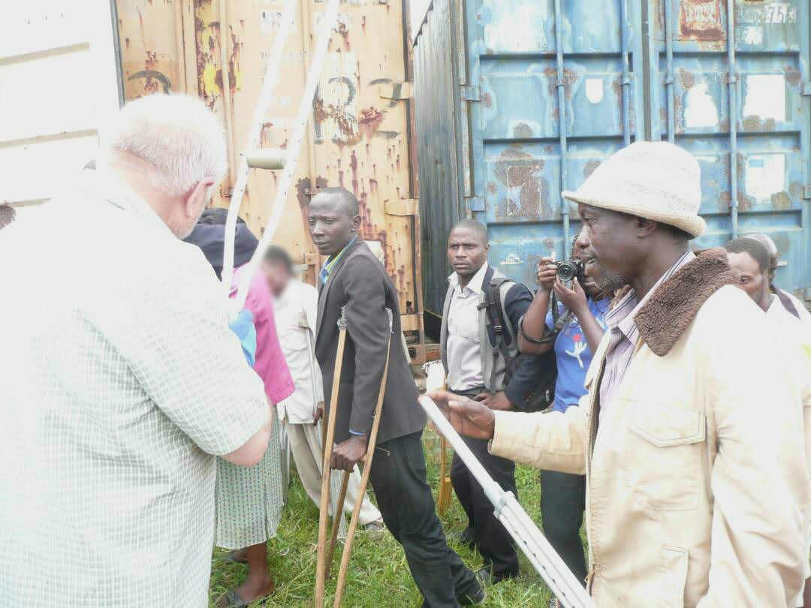
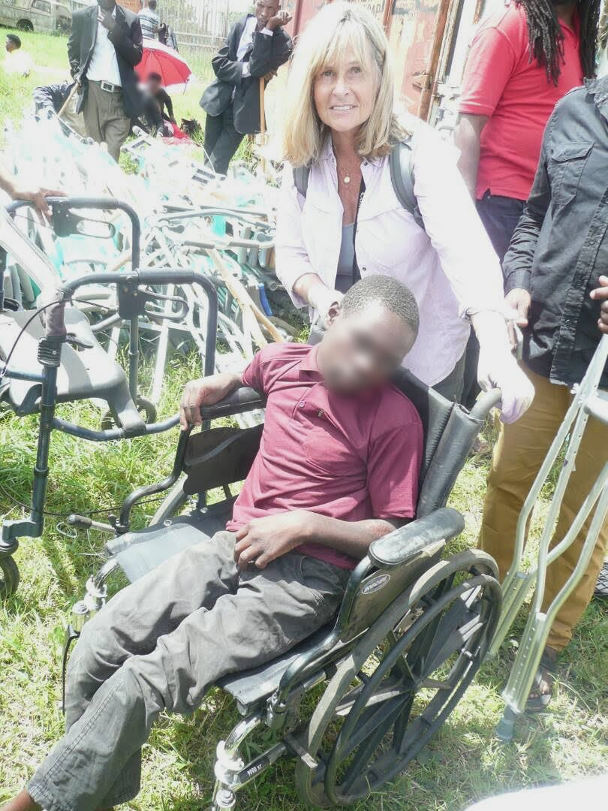
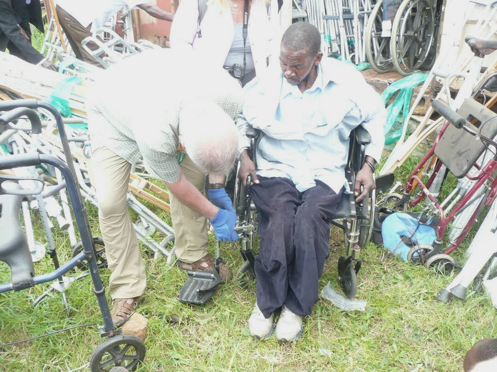
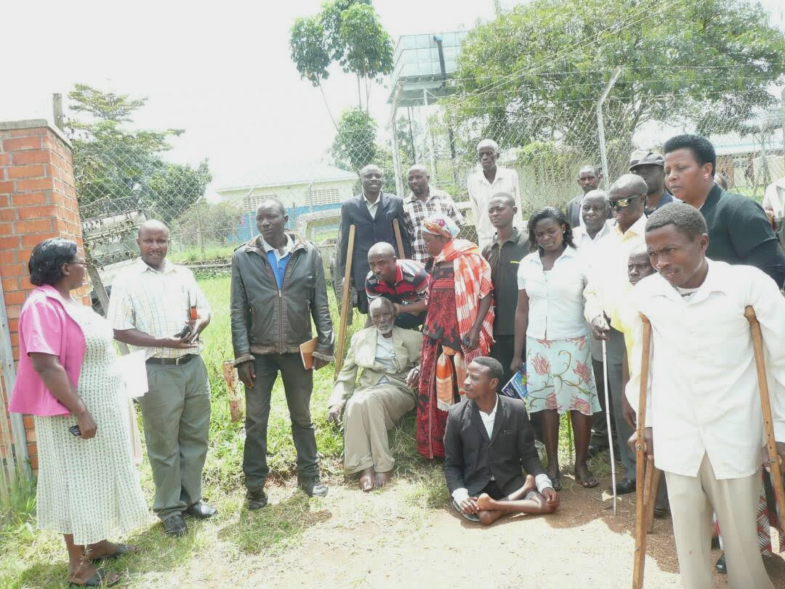

ABI Uganda partnership · Project archive
Mobility aids for participation in Uganda
Two containers supporting access to school, work and community life
Project report 2018
In 2018, the initiative mobilised two 40-foot containers of mobility equipment and distributed aids to more than 600 beneficiaries in Ntungamo, Jinja and Kasubi. Working with ABI, Crutches for Africa and individual supporters in Germany, the project connected donated equipment with people who needed it for everyday movement, education and work.
From donated equipment to local distribution
The equipment included crutches, walking frames, wheelchairs and walking aids for people with visual impairments. The photographic archive shows an open container, equipment being made available and children and adults gathered with mobility aids.
Anchored Bridges Initiatives (ABI), formerly Ability Beyond the Iris, worked with partners and supporters to organise the support in Uganda. Crutches for Africa and individual supporters in Germany contributed to the wider collaboration.


Practical support for individual users
Distribution involved people with different mobility needs. The photographs show crutch support, wheelchair users and adjustments to a wheelchair during a distribution activity. They record the practical work that accompanied making the equipment available.
The reported reach of more than 600 people covers the initiative across Ntungamo, Jinja and Kasubi. Local distribution brought the equipment closer to the communities it was intended to serve.



Reported changes in education and work
The project account describes substantial changes for many recipients. School-going beneficiaries were better able to return to school, while working adults could resume work or continue it with greater ease. The equipment also supported participation in everyday family and community activities.
These reported experiences show why mobility support matters beyond the handover of an aid. The purpose was to help people pursue their education, livelihoods and daily responsibilities with fewer physical barriers.

We thank the recipients, ABI, Crutches for Africa, the individual supporters in Germany and the other partners who helped make the 2018 distributions possible.
Download the project report as a PDF · Download the editable Word report
Programme figures and outcomes are reported by the project team.